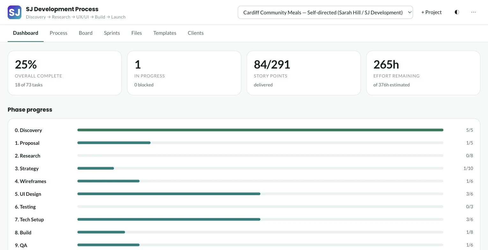

SJ Development Process
Twelve stages, sixty-nine tasks and a client sign-in, so nobody ever has to send the words "any update?" again.

The Brief.
Getting a website built is, for most people, a long quiet gap. You sign something, then nothing visible happens for weeks, and asking for an update feels like nagging. Meanwhile the studio is juggling the same twelve stages from memory and hoping nothing falls out.
I wanted one system that fixed both ends of that: a checklist rigorous enough that accessibility and testing never get quietly dropped when time runs short, and a client view honest enough that nobody needs to ask how it's going. The catch — it had to cost nothing to run and depend on nothing that could disappear.

The Approach.
Written by hand in plain HTML, CSS and JavaScript — no framework, no build step, no dependency that can rot. Progress lives in the browser; accounts and client sharing run on Supabase, with database-level rules deciding who sees what rather than the interface politely hiding things.
- Clients see a snapshot I choose to publish — never the working project
- Sign-in by emailed link, so there is no password to lose
- Installs to a phone and keeps working with no signal
- Every client form submits straight to me — nothing to download or attach
What it does.
It is live and it is what I run my own projects on. No launch metrics to quote yet — the first client projects are still moving through it — so here is what is actually in the box instead.
Phases
0Guided tasks
0Templates
0Client forms
0More Angles.
The dashboard. Everything at a glance, nothing to interpret.
The public page, on every size of screen.